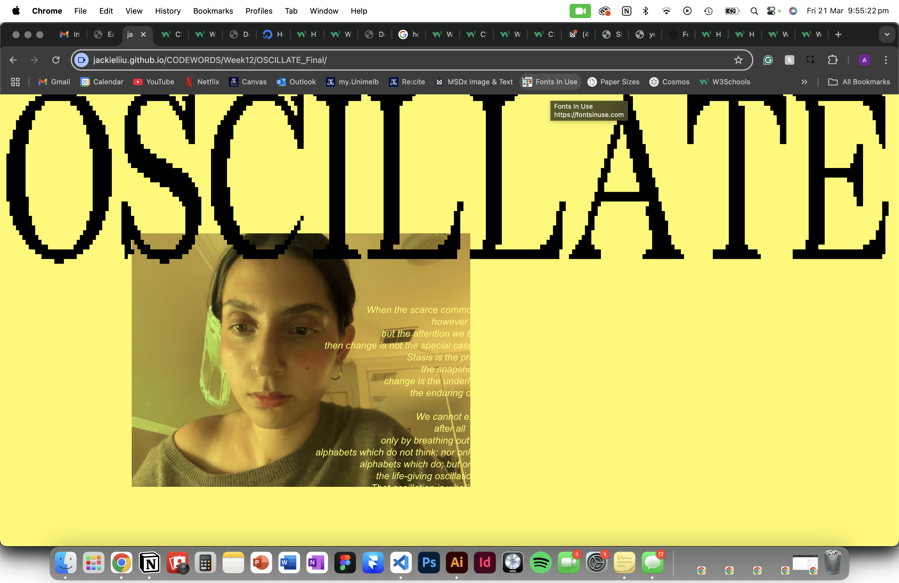

In this week's studio class, we continued to develop our coding skills and web-design in preparation for submission. The importance of responsive/fluid design was a main point of discussion that led to a workshop into methods of implementing such features into interactive design. The use of functions such as .grid-container and .grid-item became essential to achieving my desired outcome in web-design for this brief by providing a cohesive and responsive mould for the contents of my page to fit within (as displayed on the homepage).
HOMEWORK TASK
Continuing to build my skillset in HTML, I decided to introduce typographic elements using functions such as @font-face and font-family to embed typefaces outside of the pre-existing ones provided by VS Code. I embedded the typeface displayed on my header using a font from my files known as Alagard. The font used in my subheader was embedded directly from Google Fonts and is titled Public Sans.
HUNT'N'GATHER
3D Pinball for Windows - Space Cadet was a port widely known and adored by many Windows users of the 90s and early 2000s. It was a game built into many Windows interfaces at the time and became a cultural icon of the era. I had a personal love of this game and stumbling back across it again as of recently brought back a rush of nostalgia. While I could only get one of the controls in the game to work in this online adaption, it was still interesting to revisit the way in which interactivity in web- and game-design has evolved to today.